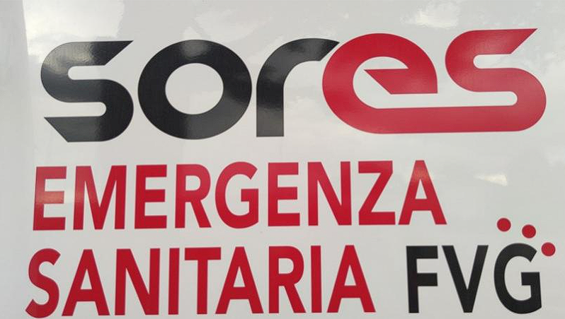

Ciao! Questo è un gestionale per le emergenze creato dall'alleanza SORES FVG del gioco operatore112.it. Potete inviare le vostre idee o segnalazioni varie a: contact@soresalliance.it

Premi sul pulsante di login qui sotto per accedere ai servizi offerti dal gestionale. **ATTENZIONE**: Ci sarà una pagina di login dove potete inserire tutte le cose che volete. I dati non saranno registrati o controllati dagli sviluppatori. Non esiste, e non esisterà, un database per la registrazione dei dati